This is the record of Rambleon Birdsong, a night elf hunter, as he walked from level eight to level twenty-one across twelve nights in Azeroth. What follows is not advice, and it is not the best road — only the one he actually took, set down in the order it happened.
1TeldrassilLevel 8–9
The record opens at Dolanaar, where Rambleon settled Zenn's Bidding and set out for Starbreeze Village and A Troubling Breeze. At Lake Al'Ameth he answered Denalan's Earth and the paired errands of the Timberlings, sprouts and seeds, while nightsabers and a webwood lurker crossed his path. The Gnarlpines kept him busiest of all — gardener, warrior, and ursa — and at the Cleft he faced something called Xethorr the Wicked, alongside a bounty on their furbolg kin. Hazardelf and Tiamaat walked with him through much of it, though he noted one spell alone at the lake, slaying timberlings by himself. He picked up word of Rellian Greenspyre and the Relics of Wakening, errands for another day, and by the time Seek Redemption!, Gnarlpine Corruption, and Twisted Hatred were settled, he had climbed to level nine at the lake.
- Picked up
- Seek Redemption!, Gnarlpine Corruption, Timberling Sprouts, Timberling Seeds, Rellian Greenspyre, The Relics of Wakening
- Turned in
- Zenn's Bidding (level 8), A Troubling Breeze (Starbreeze Village, level 8), Denalan's Earth (Lake Al'Ameth, level 8), Timberling Sprouts (Lake Al'Ameth, level 8), Timberling Seeds (Lake Al'Ameth, level 8), Seek Redemption! (level 9), Gnarlpine Corruption (Dolanaar, level 9), Twisted Hatred (Dolanaar, level 9), Bounty: Gnarlpine Furbolg (level 9)
- Reached
- level 9 (Lake Al'Ameth)
- First met in combat
- Nightsaber, Webwood Lurker, Gnarlpine Gardener, Gnarlpine Warrior, Gnarlpine Ursa, Timberling, Lasher Sproutling, Befouled Webwood, Xethorr the Wicked
- Company
- Hazardelf, Tiamaat
- “alone at the lake slayin timberlings” (Chapter 1)
2DarnassusLevel 9
Word from Dolanaar carried Rambleon down through Teldrassil to Darnassus, his first real look at the night elf capital. He passed along Warrior's Terrace and the Craftsmen's Terrace before finding the Cenarion Enclave, where he closed out Rellian Greenspyre at last. At the Temple of the Moon he picked up a new errand concerning Tumors, to carry back into the forest. Tiamaat was still beside him for this quiet turn through the city, a short pause between greener business.
- Picked up
- Tumors
- Turned in
- Rellian Greenspyre (Cenarion Enclave, level 9)
- Company
- Tiamaat
3TeldrassilLevel 9–11
Back in Teldrassil, Rambleon returned to the Oracle Glade to close out The Lost Runner and open The Enchanted Glade, then pushed through Wellspring River toward Wellspring Lake, meeting strigid hunters, an elder nightsaber, timberling tramplers and mire beasts, and bloodfeather harpies, rogues and a sorceress along the way. The river took him down three times before the glade and the lake let him go, and still he climbed to level ten there. At Dolanaar he settled Not Dead Yet and worked through Taming the Beast three times over, with Camping 101: Cooking and a Kaldorei recipe besides, reaching level eleven in the village. Lake Al'Ameth gave him The Shimmering Frond and its sprouted fronds. Bird walked beside him through much of it, and a picture holds the moment level eleven came, in Dolanaar.

- Picked up
- Not Dead Yet, The Enchanted Glade, Darkness in the Glade, Taming the Beast ×3, The Great Tree Provides, The Shimmering Frond, Recipe of the Kaldorei, Training the Beast
- Turned in
- The Lost Runner (The Oracle Glade, level 9), The Enchanted Glade (The Oracle Glade, level 10), Not Dead Yet (Dolanaar, level 10), Taming the Beast ×3 (Dolanaar, level 10), Camping 101: Cooking (Dolanaar, level 10), Recipe of the Kaldorei (Dolanaar, level 10), The Shimmering Frond (Lake Al'Ameth, level 10), The Sprouted Fronds (Lake Al'Ameth, level 10)
- Reached
- level 10 (Wellspring River), level 11 (Dolanaar)
- First met in combat
- Strigid Hunter, Elder Nightsaber, Timberling Trampler, Timberling Mire Beast, Bloodfeather Rogue, Bloodfeather Sorceress, Bloodfeather Harpy, Webwood Silkspinner, Blooming Lasher, Elder Timberling, Lady Sathrah, Feral Nightsaber
- Deaths
- 3 (Wellspring River, The Oracle Glade)
- Company
- Bird
4DarnassusLevel 11
A short return to Darnassus let Rambleon close the loop on Tumors at the Cenarion Enclave and on Training the Beast, and at the Temple of the Moon he turned in Tears of the Moon. He picked up new threads here too — word of Nessa Shadowsong, a return errand for Denalan, and Sathrah's Sacrifice — before wandering the Tradesmen's and Craftsmen's Terraces. A picture marks his entry into the city, and another a quiet moment in the Enclave. It was here he wrote what he thought of the place outright: that he really liked Darnassus, that it was calm, never overcrowded — a rare line of plain affection in the record.

- Picked up
- Nessa Shadowsong, Return to Denalan, Sathrah's Sacrifice
- Turned in
- Tumors (Cenarion Enclave, level 11), Training the Beast (level 11), Tears of the Moon (Temple of the Moon, level 11)
- “i really like darnassus... very calm. never overcrowded” (Chapter 3)
5TeldrassilLevel 11–13
Teldrassil opened wide for several nights' work. At Aldrassil he closed out Webwood Egg, Fang of Githyiss, and Tenaron's Summons, then carried Crown of the Earth back and forth from Dolanaar four times over. Lake Al'Ameth saw Return to Denalan and Oakenscowl settled, and Dolanaar took in The Great Tree Provides. At Ban'ethil Barrow Den he faced the druid Ursal the Mauler, closing The Sleeping Druid and Druid of the Claw, and there, after one death, he climbed to level twelve. Dolanaar gave him The Relics of Wakening, The Emerald Dreamcatcher, and Ferocitas the Dream Eater besides, and at the Oracle Glade he finished Darkness in the Glade, The Oracle Tree, and Easing Suffering, reaching level thirteen there. Cassidy, Aurel, Vamshi, Titania, Kaeds, Dread, Abbey, Lepoof, and Highlord all passed through his company across these nights. One evening he simply noted turning in a couple of quests before turning in himself for the night.

- Picked up
- Fang of Githyiss, Tenaron's Summons, Crown of the Earth ×5, Oakenscowl, Easing Suffering, The Sleeping Druid, Druid of the Claw, Ursal the Mauler, Ferocitas the Dream Eater, The Glowing Fruit, The Oracle Tree, Teldrassil
- Turned in
- Webwood Egg (Aldrassil, level 11), Fang of Githyiss (Aldrassil, level 11), Tenaron's Summons (Aldrassil, level 11), Crown of the Earth ×4 (Dolanaar, level 12), Return to Denalan (Lake Al'Ameth, level 11), Oakenscowl (Lake Al'Ameth, level 11), The Great Tree Provides (Dolanaar, level 11), The Sleeping Druid (Ban'ethil Barrow Den, level 12), Druid of the Claw (Ban'ethil Barrow Den, level 12), The Relics of Wakening (Dolanaar, level 12), The Emerald Dreamcatcher (Dolanaar, level 12), Ferocitas the Dream Eater (Dolanaar, level 12), The Glowing Fruit (Lake Al'Ameth, level 12), Ursal the Mauler (Dolanaar, level 12), Darkness in the Glade (The Oracle Glade, level 12), The Oracle Tree (The Oracle Glade, level 13), Easing Suffering (The Oracle Glade, level 13)
- Reached
- level 12 (Ban'ethil Barrow Den), level 13 (The Oracle Glade)
- First met in combat
- Webwood Venomfang, Timberling Trampler, Oakenscowl, Timberling Bark Ripper, Lasher Sproutling, Nightsaber Stalker, Gnarlpine Shaman, Gnarlpine Defender, Gnarlpine Augur, Rageclaw, Ferocitas the Dream Eater, Gnarlpine Mystic
- Deaths
- 1 (Ban'ethil Barrow Den)
- Company
- Cassidy, Aurel, Vamshi, Titania, Kaeds, Dread, Abbey, Lepoof, Highlord
- “turning in a couple quests then turning in for the night” (Chapter 4)
6DarnassusLevel 13
A brief pass through Darnassus brought Rambleon once more to the Cenarion Enclave, where he turned in the quest simply called Teldrassil, a fitting close to so much time spent in the forest above. He picked up word of the Grove of the Ancients before moving on, pausing only briefly on Warrior's Terrace and the Craftsmen's Terrace on his way through. A picture marks his entry into the city that evening, brief as the visit itself turned out to be.
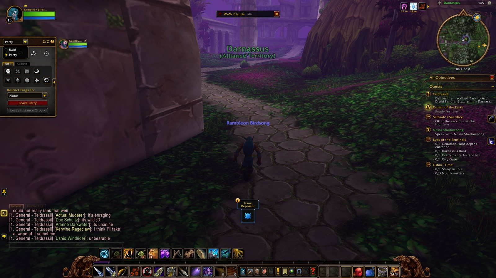
- Picked up
- Grove of the Ancients
- Turned in
- Teldrassil (Cenarion Enclave, level 13)
7TeldrassilLevel 13
At Rut'theran Village, on the shore where the boats depart, Rambleon closed out the errand of Nessa Shadowsong and the Bounty of Teldrassil in the very same brief stop. He picked up a flight to Auberdine in that same breath, with the Veiled Sea stretching out before him, open water in place of the forest paths he had walked at every level so far.
- Picked up
- The Bounty of Teldrassil, Flight to Auberdine
- Turned in
- Nessa Shadowsong (Rut'theran Village, level 13), The Bounty of Teldrassil (Rut'theran Village, level 13)
8DarkshoreLevel 13–15
The flight to Auberdine put Rambleon ashore in Darkshore, a coast new to him. Washed Ashore and Buzzbox 827 kept him along the beach at first, Beached Sea Turtle and How Big a Threat? among Auberdine's business, while greymist raiders, coastrunners, and seers tested the shoreline. He pressed inland through the Grove of the Ancients and into Bashal'Aran, where moonstalkers and thistle bears ran thick, and the Tower of Althalaxx drew him back more than once. Deep Ocean, Vast Sea and the Red Crystal were settled at Auberdine as he reached level fourteen on that coast. The Fall of Ameth'Aran, Tools of the Highborne, and the Cliffspring River followed before he climbed again, to level fifteen, among the ruins of Ameth'Aran. The coast was not gentle — ten deaths across the Vale, the Excavation, Mist's Edge, Bashal'Aran, and the Tower — but Strafhe, Banne, and Cassidy shared the road, and pictures mark both the landing and each level gained.
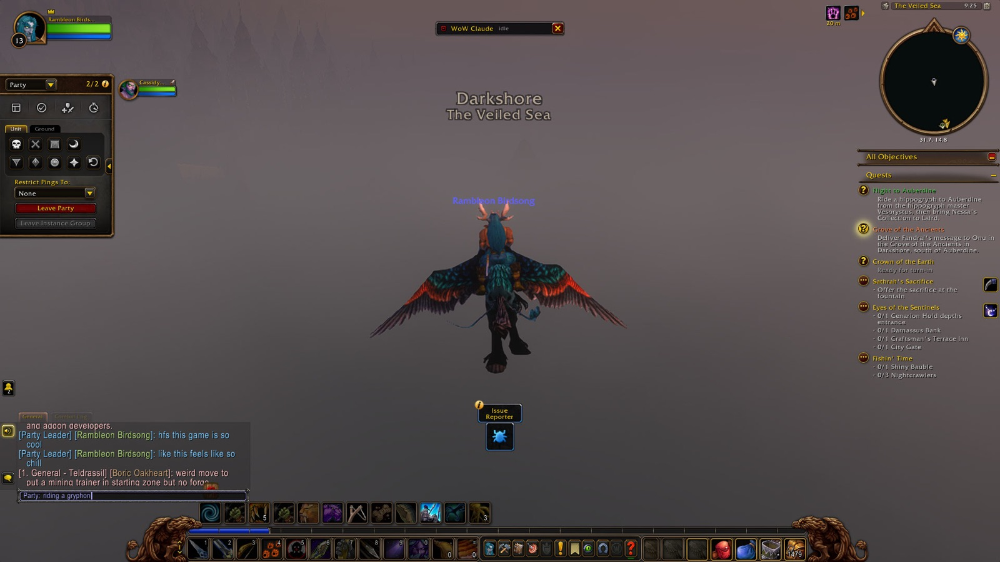
- Picked up
- Washed Ashore ×2, Return to Nessa, WANTED: Jai'vhanel, Cave Mushrooms, The Red Crystal, Buzzbox 827, For Love Eternal, The Family and the Fishing Pole, Beached Sea Turtle, Buzzbox 411, Plagued Lands, How Big a Threat? ×2, The Tower of Althalaxx ×3, Deep Ocean, Vast Sea, Bashal'Aran ×4, Tools of the Highborne, Expanding Horizons, Thundris Windweaver, The Cliffspring River, Beached Sea Creature, Buzzbox 323, As Water Cascades, The Fall of Ameth'Aran, WANTED: Murkdeep!, Fruit of the Sea, The Absent Minded Prospector, The Blackwood Corrupted
- Turned in
- Flight to Auberdine (Auberdine, level 13), Washed Ashore ×2 (Auberdine, level 13), Grove of the Ancients (Grove of the Ancients, level 13), Buzzbox 827 (Auberdine, level 13), Beached Sea Turtle (Auberdine, level 13), How Big a Threat? (Auberdine, level 13), Thundris Windweaver (Auberdine, level 13), Buzzbox 411 (Mist's Edge, level 14), Deep Ocean, Vast Sea (Auberdine, level 14), Beached Sea Creature (Auberdine, level 14), Bashal'Aran ×3 (Bashal'Aran, level 14), The Red Crystal (Auberdine, level 14), The Fall of Ameth'Aran (Twilight Vale, level 15), Tools of the Highborne (Auberdine, level 15), The Tower of Althalaxx ×2 (level 15), The Cliffspring River (Auberdine, level 15)
- Reached
- level 14 (Darkshore), level 15 (Ameth'Aran)
- First met in combat
- Greymist Raider, Greymist Coastrunner, Pygmy Tide Crawler, Young Reef Crawler, Greymist Seer, Moonstalker, Rabid Thistle Bear, Grizzled Thistle Bear, Blackwood Windtalker, Blackwood Pathfinder, Darkshore Thresher, Moonstalker Runt
- Deaths
- 10 (Twilight Vale, Remtravel's Excavation, Mist's Edge, Bashal'Aran, Tower of Althalaxx)
- Company
- Strafhe, Banne, Cassidy
9TeldrassilLevel 15
A short crossing of the Veiled Sea brought Rambleon back to Rut'theran Village, where he closed out Return to Nessa, an errand that had followed him since his first days on the island. He passed once more through Darnassus on the way, pictures marking both his entry into Teldrassil and into the city he had come to know, a brief homecoming before the coast called him back again.
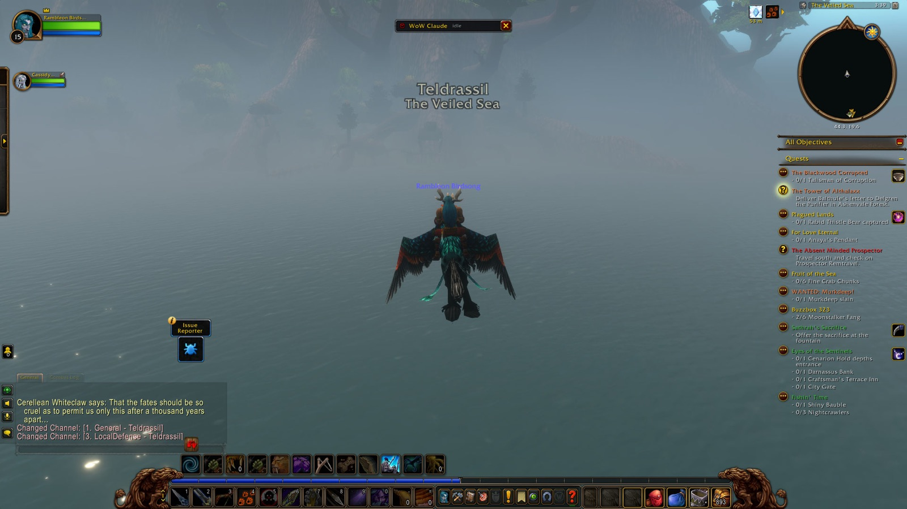
- Turned in
- Return to Nessa (Rut'theran Village, level 15)
10DarkshoreLevel 15–17
Rambleon returned to Darkshore for another long stretch, this time clearing the coast more thoroughly. Beached Sea Creature and Beached Sea Turtle came in pairs, Plagued Lands and the Blackwood Corrupted were settled at Auberdine, and a bounty on the murloc Murkdeep was answered among tide crawlers, netters, and reef crawlers along the shore. At Bashal'Aran he fought through its own quest line and reached level sixteen there. Cleansing of the Infected, Tharnariun's Hope, and Buzzbox 525 followed, and at Blackwood Den he settled A Lost Master twice over against blackwood warriors, climbing afterward to level seventeen at Twilight Vale. Six deaths marked this leg, at Twilight Shore and at Blackwood Den, but Caerwyn, Reighna, Elentria, Softtaco, Menos, Cassidy, and Noseeum all kept him company somewhere along the way. Pictures hold both level sixteen at Bashal'Aran and level seventeen at Twilight Vale.
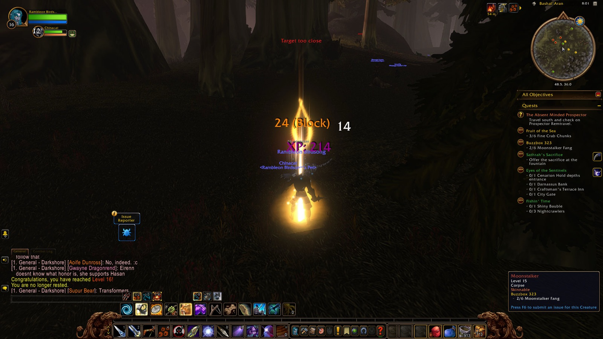
- Picked up
- Beached Sea Creature ×2, Beached Sea Turtle ×2, Plagued Lands, Cleansing of the Infected, Buzzbox 525, Tharnariun's Hope, Trek to Ashenvale, A Lost Master ×2, Escape Through Force
- Turned in
- Beached Sea Creature ×2 (Auberdine, level 15), Beached Sea Turtle ×2 (Auberdine, level 16), WANTED: Murkdeep! (Auberdine, level 15), The Blackwood Corrupted (Auberdine, level 16), Plagued Lands (Auberdine, level 16), Buzzbox 323 (Cliffspring River, level 16), Fruit of the Sea (Auberdine, level 16), Cleansing of the Infected (Auberdine, level 16), Tharnariun's Hope (Auberdine, level 16), How Big a Threat? (Auberdine, level 16), Buzzbox 525 (Twilight Vale, level 17), For Love Eternal (Auberdine, level 17), WANTED: Jai'vhanel (Auberdine, level 17), A Lost Master ×2 (Blackwood Den, level 17), Bashal'Aran (Bashal'Aran, level 17)
- Reached
- level 16 (Bashal'Aran), level 17 (Twilight Vale)
- First met in combat
- Tide Crawler, Greymist Seer, Greymist Netter, Reef Crawler, Greymist Warrior, Murkdeep, Greymist Hunter, Greymist Tidehunter, Moonstalker Runt, Moonstalker, Blackwood Warrior, Rabid Thistle Bear
- Deaths
- 6 (Twilight Shore, Blackwood Den)
- Company
- Caerwyn, Reighna, Elentria, Softtaco, Menos, Cassidy, Noseeum
11AshenvaleLevel 17
Rambleon's road finally left Darkshore for Ashenvale, a picture marking the crossing. At Maestra's Post he turned in the Tower of Althalaxx, carried all the way from the coast, and at Astranaar he closed Trek to Ashenvale, the errand that had named this new country for him. He picked up On Guard in Stonetalon and word of the Zoram Strand before the stop was through. Cassidy was with him for this short turn into new ground.
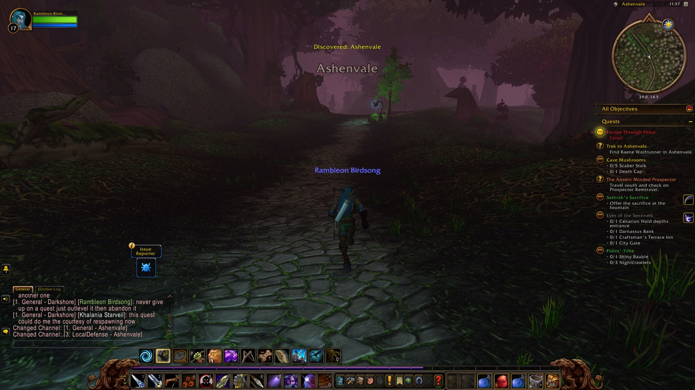
- Picked up
- The Tower of Althalaxx, The Zoram Strand, On Guard in Stonetalon
- Turned in
- The Tower of Althalaxx (Maestra's Post, level 17), Trek to Ashenvale (Astranaar, level 17)
- Company
- Cassidy
12DarkshoreLevel 17
Back across to Darkshore once more, Rambleon worked the familiar ground of Twilight Vale, Twilight Shore, the Long Wash, Bashal'Aran, and Ameth'Aran, with moonstalkers, blackwood warriors, and a den mother among the opposition, twilight disciples and thugs further on. He picked up Therylune's Escape to carry forward, and lost one fight at the Master's Glaive before the stretch was done. Tina, Cassidy, and Papa shared the road with him this time, and a picture marks his return to the coast.
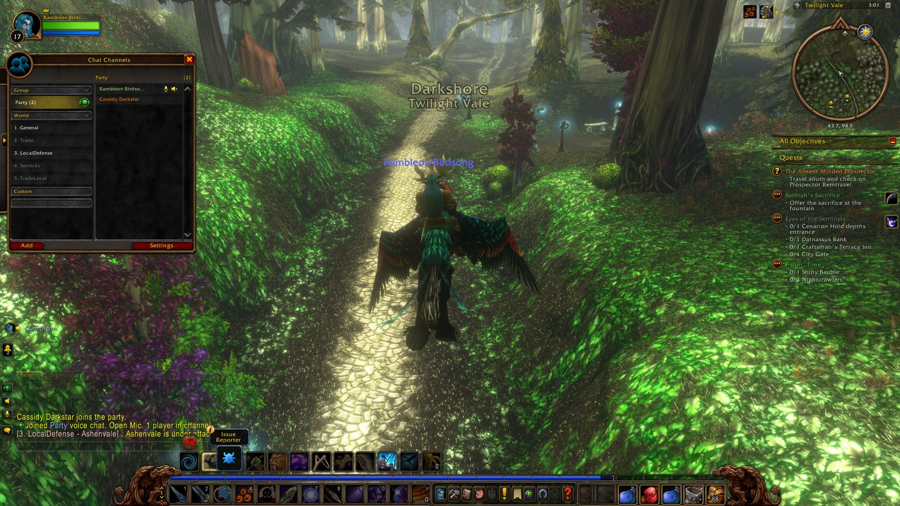
- Picked up
- Therylune's Escape
- First met in combat
- Moonstalker, Blackwood Warrior, Den Mother, Twilight Disciple, Twilight Thug, Moonstalker Matriarch, Moonstalker Runt, Moonstalker Sire
- Deaths
- 1 (The Master's Glaive)
- Company
- Tina, Cassidy, Papa
13AshenvaleLevel 17–18
Rambleon's second turn in Ashenvale took him deeper, into the Ruins of Ordil'Aran and the Fire Scar Shrine, where dark strand cultists, a voidwalker minion, and their adepts kept him fighting, alongside wildthorn stalkers, ghostpaw runners, felslayers, a lesser felguard, and something called Ilkrud Magthrull. He turned in another Tower of Althalaxx at Maestra's Post along the way. Five deaths found him across Ashenvale, the Shrine of Aessina, and the Fire Scar Shrine, but at the Shrine itself he climbed to level eighteen, and a picture holds that moment. Papa and Karis stood with him through the harder fighting here.
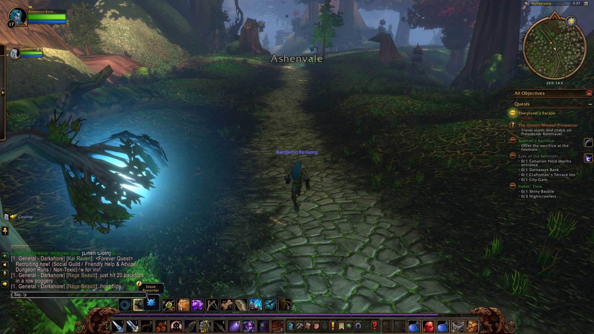
- Picked up
- The Tower of Althalaxx
- Turned in
- The Tower of Althalaxx (Maestra's Post, level 17)
- Reached
- level 18 (The Shrine of Aessina)
- First met in combat
- Dark Strand Cultist, Voidwalker Minion, Dark Strand Adept, Wildthorn Stalker, Ghostpaw Runner, Felslayer, Lesser Felguard, Ilkrud Magthrull
- Deaths
- 5 (Ashenvale, The Shrine of Aessina, Fire Scar Shrine)
- Company
- Papa, Karis
14DarkshoreLevel 18
This leg of the journey stayed light, a return through Auberdine, the Long Wash, and Twilight Shore with no new quests recorded and no battles worth the noting. Cassidy and Karis kept him company for the hour, familiar faces on ground he had crossed more than once already, the kind of easy, unremarkable travel that fills the space between the larger stories without needing one of its own, a breath taken before the next push forward.
- Company
- Cassidy, Karis
15AshenvaleLevel 18
The road home ran long this time, back through Darkshore, Teldrassil, and Darnassus before circling again into Ashenvale. At the Zoram Strand and Lake Falathim he met wrathtail wave riders, a sorceress and razortails among them, saltspittle muckdwellers, puddlejumpers and warriors, and lost three fights between the lake and the wider province. At the Moonwell he turned in Raene's Cleansing three times over, and at Astranaar he closed the Zoram Strand errand at last and turned in the Tower of Althalaxx once more at Maestra's Post. New threads piled up for later — Journey to Stonetalon Peak, Culling the Threat, Pridewings of Stonetalon, An Aggressive Defense, Unrequited Love, Researching the Corruption, and word of a search for Thaelrid. Pictures mark his passage back into Ashenvale, into Teldrassil, and into Darnassus along the way.
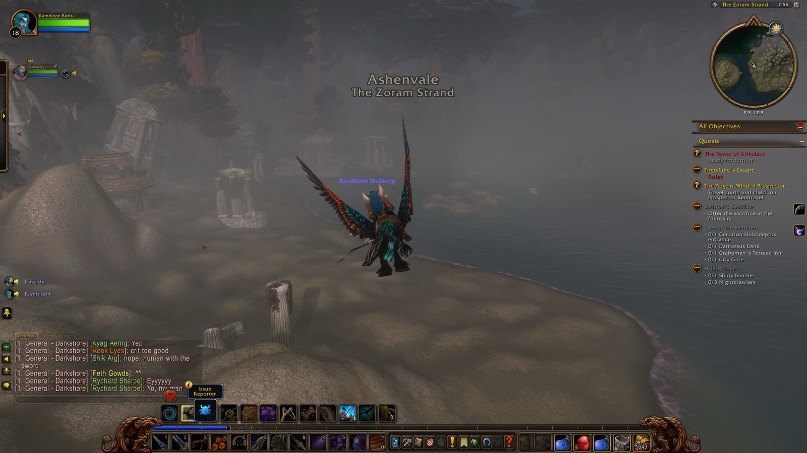
- Picked up
- Journey to Stonetalon Peak, Raene's Cleansing ×4, Culling the Threat, The Tower of Althalaxx, Pridewings of Stonetalon, An Aggressive Defense, Unrequited Love, Researching the Corruption, In Search of Thaelrid
- Turned in
- The Tower of Althalaxx (Maestra's Post, level 18), Raene's Cleansing ×3 (Moonwell, level 18), The Zoram Strand (Astranaar, level 18)
- First met in combat
- Ghostpaw Runner, Saltspittle Muckdweller, Wrathtail Wave Rider, Wrathtail Sorceress, Wrathtail Razortail, Wildthorn Stalker, Ashenvale Bear, Saltspittle Puddlejumper, Saltspittle Warrior
- Deaths
- 3 (Lake Falathim, Ashenvale)
16DarkshoreLevel 18
From Ashenvale, Rambleon cut back through Darkshore one more time, past Mist's Edge, Auberdine, and the familiar length of the Long Wash, a moonstalker sire the only new foe recorded along the way. He put it plainly in his own words: a long walk on the Long Wash was in order, and so it was, Twilight Shore and Twilight Vale and the Master's Glaive all passing beneath his feet before the road bent toward the Barrens. Chud walked with him for this stretch, and a picture marks the moment he first set foot in that new, grassy country.
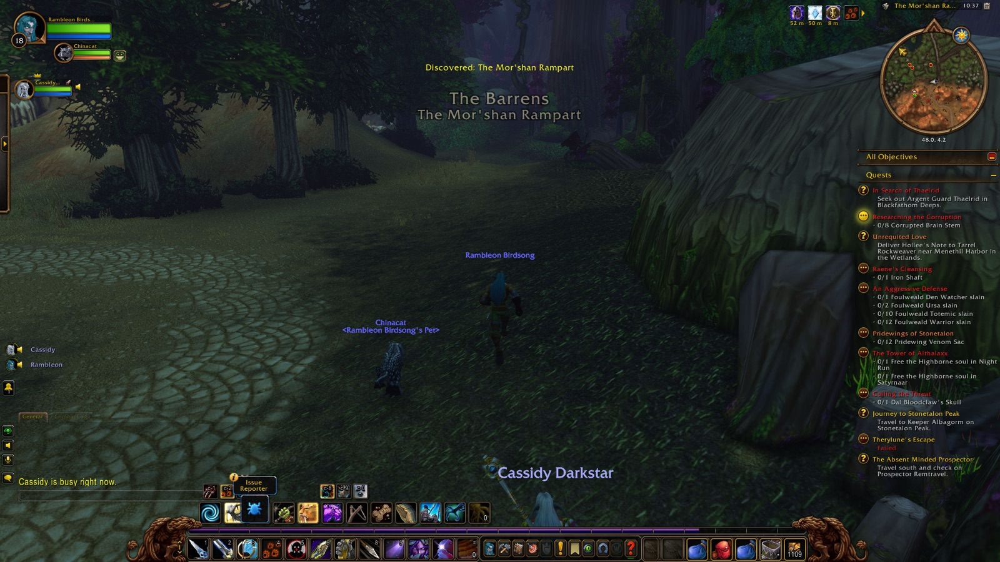
- First met in combat
- Moonstalker Sire
- Company
- Chud
- “a long walk on the long wash is in order” (Chapter 7)
17The BarrensLevel 18
The Barrens opened flat and wide before him, nothing like the forests he had known. He passed the Mor'shan Rampart and the Gold Road, through the Crossroads, Thorn Hill, and Honor's Stand, with hecklefang hyenas and an ornery plainstrider crossing his path in country built on open distance rather than canopy overhead. One death found him somewhere in that grass before he moved on, a short, strange stop on a much longer road that was only just beginning to widen.
- First met in combat
- Hecklefang Hyena, Ornery Plainstrider
- Deaths
- 1 (The Barrens)
18Stonetalon MountainsLevel 18–19
Stonetalon Mountains rose up next, Camp Aparaje and the Webwinder Path his first ground there. He closed On Guard in Stonetalon twice over and settled A Gnome's Respite, while deepmoss venomspitters, Venture Co. deforesters and loggers, and a sap beast tested the lower slopes. Pridewing wyverns and their consorts gave him more trouble than most, enough that he set down a piece of plain wisdom: patience is key with pridewings. At Blackwolf River he reached level nineteen. He picked up An Old Colleague and A Scroll from Mauren before pressing on to Stonetalon Peak itself, where he closed out the Journey to Stonetalon Peak and faced a blackened basilisk among the heights. Kancho and Cassidy traveled this ground with him, and pictures mark both his entry into the mountains and the level gained at Blackwolf River.
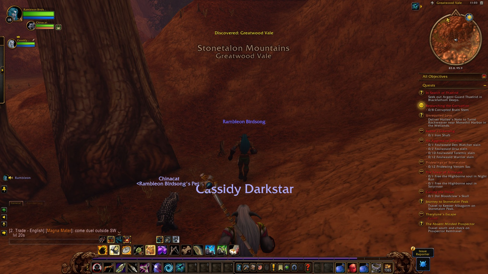
- Picked up
- On Guard in Stonetalon, A Gnome's Respite, Super Reaper 6000, An Old Colleague, A Scroll from Mauren
- Turned in
- On Guard in Stonetalon ×2 (Webwinder Path, level 18), A Gnome's Respite (Webwinder Path, level 19), Journey to Stonetalon Peak (Stonetalon Peak, level 19)
- Reached
- level 19 (Blackwolf River)
- First met in combat
- Deepmoss Venomspitter, Venture Co. Deforester, Venture Co. Logger, Pridewing Wyvern, Pridewing Consort, Blackened Basilisk, Sap Beast
- Company
- Kancho, Cassidy
- “patience is key with pridewings” (Chapter 8)
19AshenvaleLevel 19
A brief crossing back through the Veiled Sea, the Zoram Strand, and Lake Falathim brought Rambleon once more to Astranaar, where he closed out Pridewings of Stonetalon at Maestra's Post, the patience he had learned on the mountain paying off in the end. A picture marks this return into Ashenvale, quick and quiet as the stop itself turned out to be, barely time to catch his breath before moving on again toward the coast.
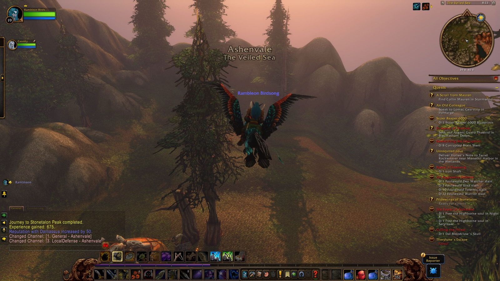
- Turned in
- Pridewings of Stonetalon (Astranaar, level 19)
20DarkshoreLevel 19
Darkshore again, and this time something different waited at Remtravel's Excavation — cracked golems, gravelflint scouts and a geomancer, and a stone behemoth among the diggings, unlike anything the coast had shown him before. He passed back through Twilight Vale, Twilight Shore, the Long Wash, and Auberdine on the way there, Raín and Is keeping him company through the dig. A picture marks his entry into the coast once more, familiar ground wearing a new and stonier face.
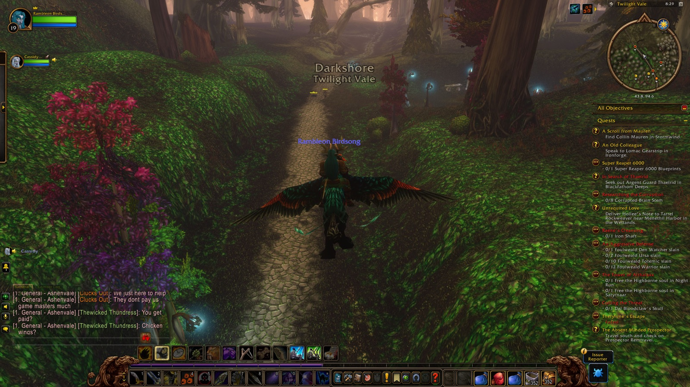
- First met in combat
- Cracked Golem, Gravelflint Scout, Stone Behemoth, Gravelflint Geomancer
- Company
- Raín, Is
21Blackfathom DeepsLevel 19
Rambleon went underground for the first time in this record, into Blackfathom Deeps, down to the Drowned Sacellum where murkshallow snapclaws, skittering crustaceans, and blindlight murlocs waited in the dark water. He picked up Knowledge in the Deeps while he was down there, and the place cost him twice, once in the Sacellum and once more elsewhere in the instance, before he found his way back out through Teldrassil. A picture holds the entrance to the Deeps, and another his return to the island above.
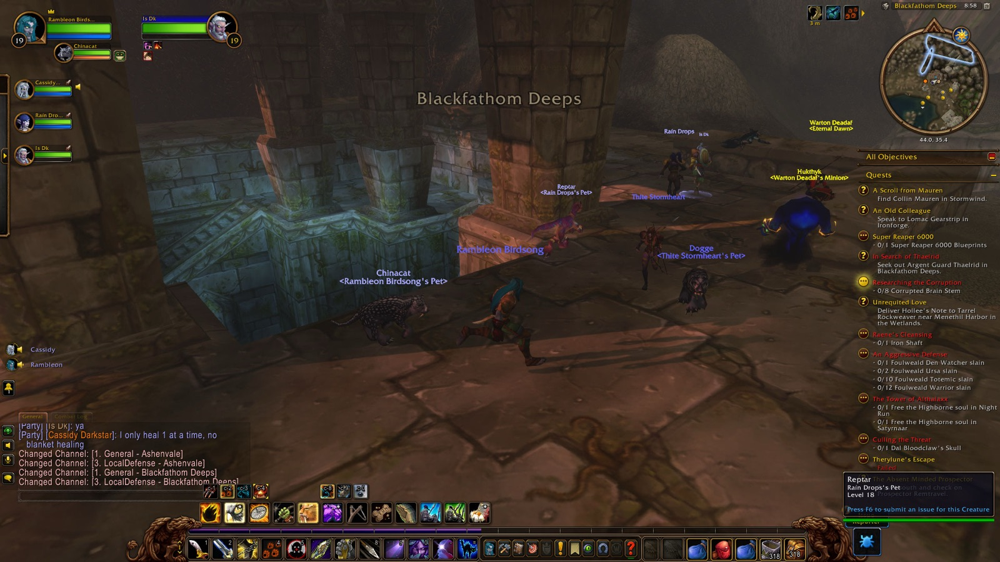
- Picked up
- Knowledge in the Deeps
- First met in combat
- Murkshallow Snapclaw, Skittering Crustacean, Blindlight Murloc
- Deaths
- 2 (The Drowned Sacellum, Blackfathom Deeps)
- Instances
- Blackfathom Deeps
22Stormwind CityLevel 19
The journey left Kalimdor's night elf lands behind at last and brought Rambleon into Stormwind City by way of Elwynn Forest, a picture marking each crossing. At Cathedral Square he closed out Expanding Horizons, carried all the way from Teldrassil, and in the Mage Quarter he settled A Scroll from Mauren. The city gave him plenty to carry forward — Making Do, Humble Beginnings, Devils in Westfall, Retrieval for Mauren, Elmore's Task, and Gold Dust Exchange — as he walked the Harbor, the Canals, the Trade District, and the Valley of Heroes, taking in a capital built on stone instead of wood.
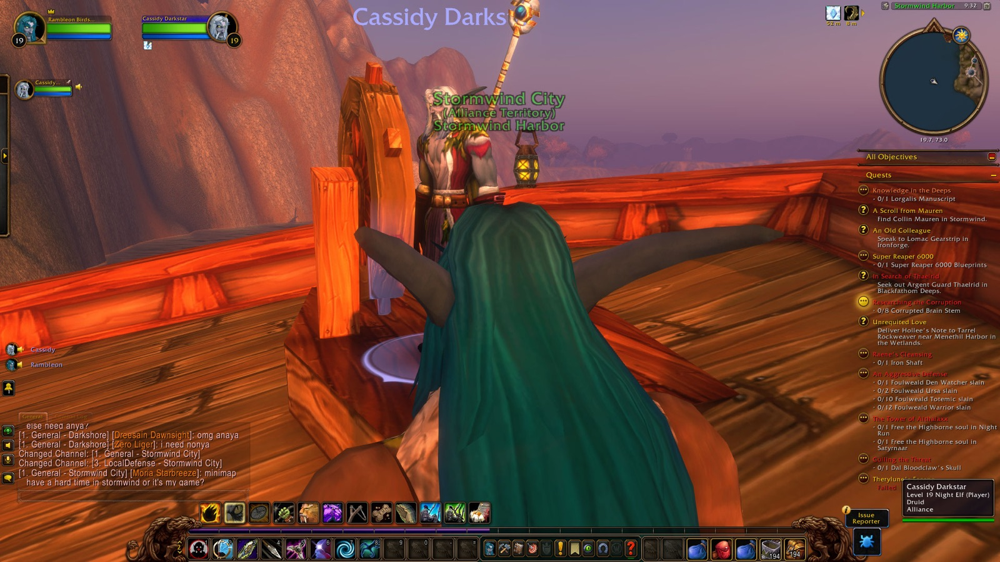
- Picked up
- Making Do, Humble Beginnings, Devils in Westfall, Retrieval for Mauren, Elmore's Task, Gold Dust Exchange
- Turned in
- Expanding Horizons (Cathedral Square, level 19), A Scroll from Mauren (Mage Quarter, level 19)
23WestfallLevel 19
Westfall opened dusty and wind-worn after Stormwind's stone, and Rambleon found Saldean's Farm and Sentinel Hill quick to put him to work. He turned in Westfall Stew at the farm and picked up a long list to carry forward — Poor Old Blanchy, The Forgotten Heirloom, The Killing Fields, Harvesting the Harvesters, The Defias Brotherhood, The People's Militia, Patrolling Westfall, and Red Leather Bandanas — while harvest watchers, dust devils, goretusks, and riverpaw brutes and bandits gave him his first taste of the Defias and its country. One death found him somewhere in that farmland before the stretch was through. Pictures mark his entry into Westfall and, briefly, into Sentinel Tower along the way.
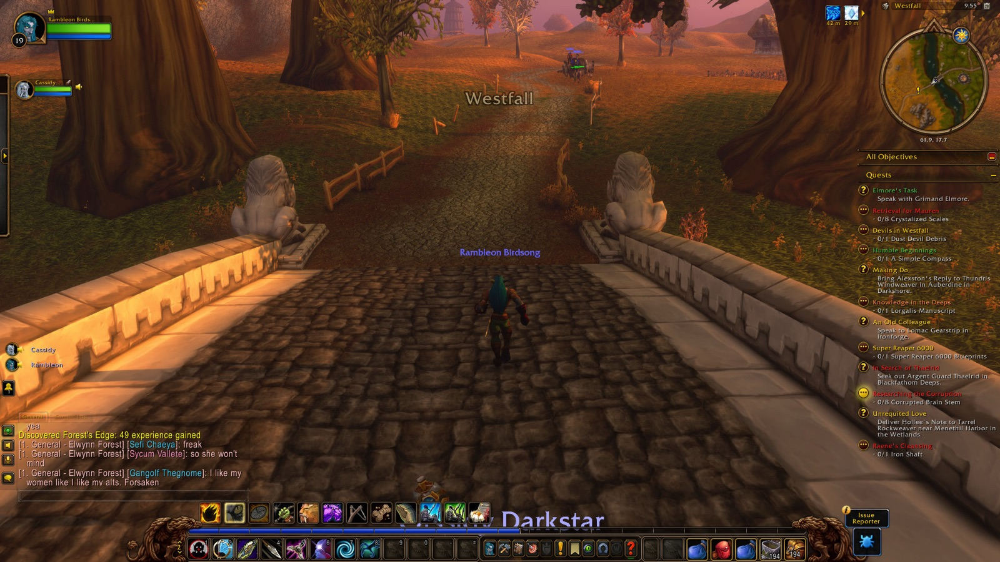
- Picked up
- Westfall Stew, Poor Old Blanchy, The Forgotten Heirloom, The Killing Fields, Harvesting the Harvesters, The Defias Brotherhood, The People's Militia, Patrolling Westfall, Red Leather Bandanas
- Turned in
- Westfall Stew (Saldean's Farm, level 19)
- First met in combat
- Harvest Watcher, Dust Devil, Goretusk, Riverpaw Brute, Riverpaw Bandit
- Deaths
- 1 (Westfall)
24Sentinel TowerLevel 19
A quick stop at Sentinel Tower let Rambleon turn in Patrolling Westfall, the briefest of pauses in a day already full of walking. From there the road carried him on through Duskwood and Elwynn Forest, a picture marking his first step into that quieter, darker country, though he did not yet have reason to linger there.
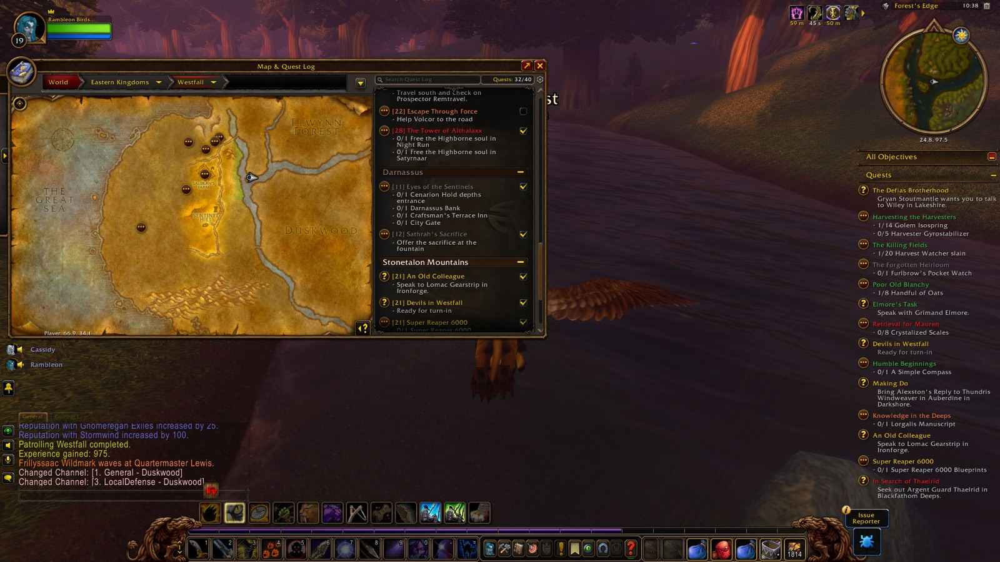
- Turned in
- Patrolling Westfall (level 19)
25Stormwind CityLevel 19
Back in Stormwind, Rambleon made his way deeper into the city than before, through Stormwind Keep, the Royal Library and Gallery, and the Petitioner's Chamber. He closed out Devils in Westfall and Elmore's Task, carried in from the farmland, and in the Royal Library he settled Reading Room before finishing Shelf Picked at the Park. New business piled up here too — Special Delivery for Gaxim, Stormpike's Delivery, Underground Assault, Collecting Memories, and one called Oh Brother... — enough to keep him busy well beyond this visit. A picture marks his first look at the entrance to the Deeprun Tram, a door to somewhere he had not yet gone.
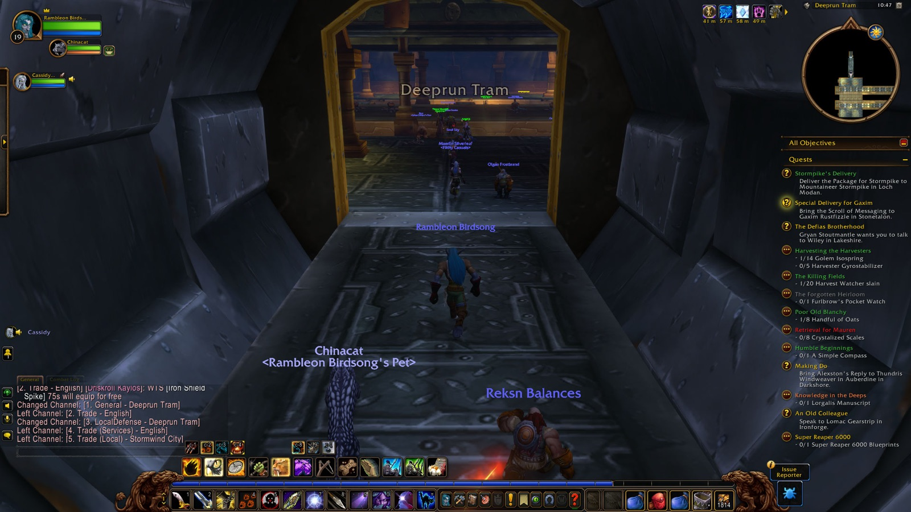
- Picked up
- Special Delivery for Gaxim, Reading Room, Stormpike's Delivery, Underground Assault, Collecting Memories, Oh Brother..., Shelf Picked
- Turned in
- Devils in Westfall (Mage Quarter, level 19), Elmore's Task (Dwarven District, level 19), Reading Room (Royal Library, level 19), Shelf Picked (The Park, level 19)
26DarkshoreLevel 19–20
The road bent back to Darkshore once more, Rambleon passing again through Ashenvale and Teldrassil to reach it. At Auberdine he turned in Making Do, carried from Stormwind, and later closed Escape Through Force there too, after picking it up along the way. Grizzled thistle bears, a giant foreststrider, moonstalker sires, and blackwood warriors, an ursa, and a shaman met him along the familiar coast, with twilight disciples and thugs further in, and one death found him at Twilight Vale before the stretch was through. At the Master's Glaive he climbed to level twenty, a picture marking the moment. He picked up The Powers Below and Therylune's Escape to carry forward. Val, Cassidy, Andria, Fanaandel, Koiya, and Artemisa all shared pieces of this road with him, and more pictures mark his passage back through Teldrassil and a quiet moment on the Veiled Sea.
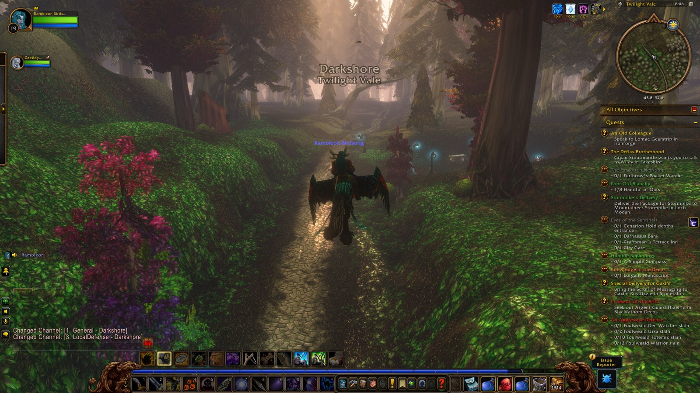
- Picked up
- Escape Through Force, The Powers Below, Therylune's Escape
- Turned in
- Making Do (Auberdine, level 19), Escape Through Force (Auberdine, level 20)
- Reached
- level 20 (The Master's Glaive)
- First met in combat
- Grizzled Thistle Bear, Giant Foreststrider, Moonstalker Sire, Blackwood Warrior, Blackwood Ursa, Blackwood Shaman, Twilight Disciple, Twilight Thug
- Deaths
- 1 (Twilight Vale)
- Company
- Val, Cassidy, Andria, Fanaandel, Koiya, Artemisa
27Stormwind CityLevel 20
Back in Stormwind at level twenty, Rambleon made his way to the Cathedral of Light and the Royal Library, where he turned in Speaking of Fortitude. He picked up word of Brother Paxton there as well, an errand that would have to wait. A picture marks his return to the city, and another the moment he finally stepped into the Deeprun Tram itself, that strange door beneath the mountain he had only glimpsed before.
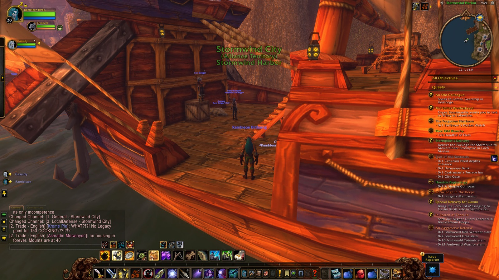
- Picked up
- Speaking of Fortitude, Brother Paxton
- Turned in
- Speaking of Fortitude (Royal Library, level 20)
28Deeprun TramLevel 20
The tram itself was the whole of this stop, a single minute spent underground on a line connecting two cities he had only ever reached before by foot or by sea. Rambleon marked the moment with a picture and a note that said plainly what it meant to him: his first train ride, a small and genuine pleasure tucked in among everything else he was carrying that particular night, worth setting down on its own.
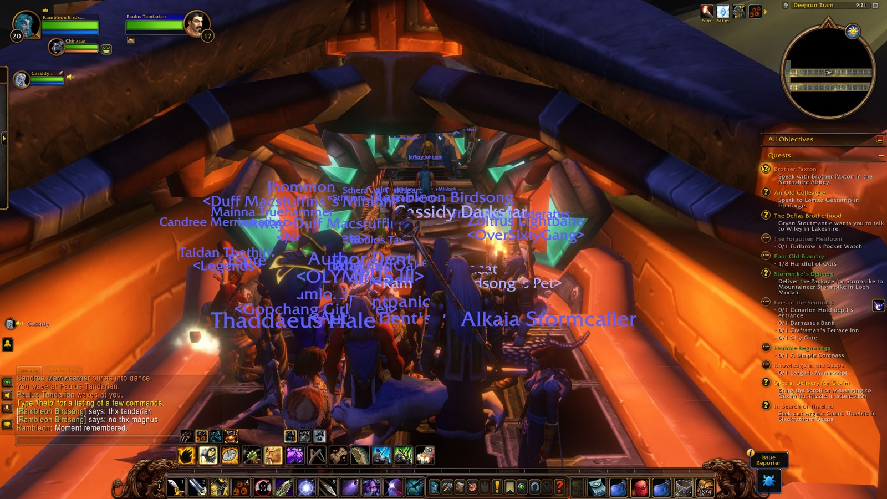
- “1st train ride” (Chapter 9)
29IronforgeLevel 20
The tram let Rambleon off in Ironforge, a dwarven city entirely new to him, and a picture marks the arrival. In Tinker Town he finally closed out An Old Colleague, carried all the way from Stonetalon, and at the Forlorn Cavern he settled The Powers Below as well. He walked through the Military Ward, the Great Forge, the Hall of Explorers, and the Mystic Ward and High Seat besides, picking up Save Techbot's Brain!, Find Bingles, The Day After, and Ineptitude + Chemicals = Fun before the visit was done — stone and machinery, stranger underfoot than anything the forests had prepared him for.
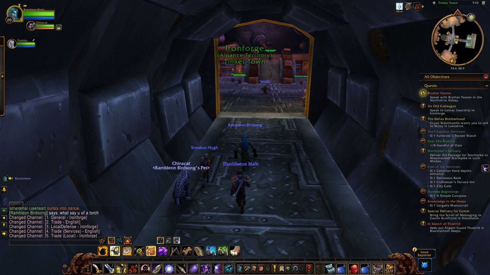
- Picked up
- Save Techbot's Brain!, Find Bingles, The Day After, Ineptitude + Chemicals = Fun
- Turned in
- An Old Colleague (Tinker Town, level 20), The Powers Below (The Forlorn Cavern, level 20)
30AshenvaleLevel 20
Ashenvale called him back once more, a picture marking the crossing. At the Shrine of Aessina he closed Therylune's Escape, and at Astranaar he settled An Aggressive Defense. Greenpaw Village brought a new kind of trouble — foulweald totemics, pathfinders, warriors, a den watcher, an ursa, and a shaman, thick enough fighting to go with the ghostpaw runners and wildthorn stalkers he already knew from this province. One death found him somewhere in that fighting. Rip, Ialach, Alourah, and Sertuvius stood with him through it, company enough to make the harder parts of Greenpaw Village feel less lonely than the lake had, back when he started.
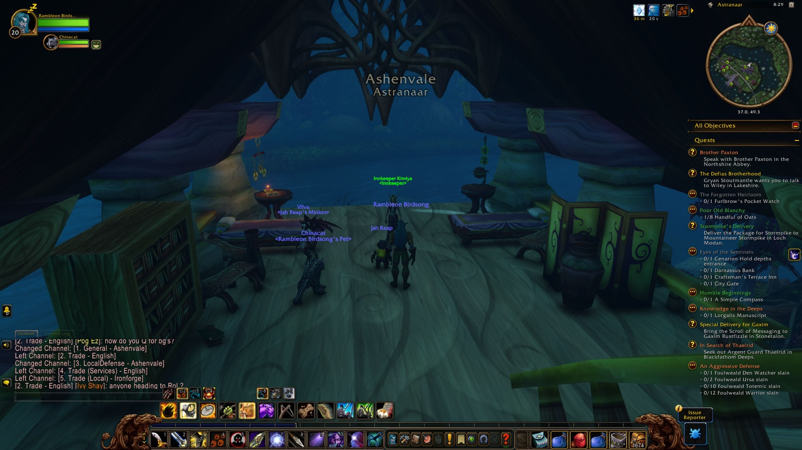
- Turned in
- Therylune's Escape (The Shrine of Aessina, level 20), An Aggressive Defense (Astranaar, level 20)
- First met in combat
- Ghostpaw Runner, Wildthorn Stalker, Foulweald Totemic, Foulweald Pathfinder, Foulweald Warrior, Foulweald Den Watcher, Foulweald Ursa, Foulweald Shaman
- Deaths
- 1 (Ashenvale)
- Company
- Rip, Ialach, Alourah, Sertuvius
31Stonetalon MountainsLevel 20
The road carried Rambleon far afield before landing him back in Stonetalon Mountains — through Ashenvale, Darkshore, Stormwind, and Elwynn Forest first, each crossing marked with its own picture. At Webwinder Path he finally turned in Special Delivery for Gaxim, a parcel carried all the way from Ironforge. The Charred Vale proved the hardest ground yet: bloodfury ambushers, harpies, and a windcaller, a rogue flame spirit, a charred ancient, and singed basilisks among the burned stone, on top of the sap beasts, antlered coursers, and blackened basilisks already known from these mountains. Seven deaths were paid out across the Vale, the mountains proper, and Mirkfallon Lake before Reclaiming the Charred Vale was even picked up in earnest. Cassidy, Arktalis, and Falsila shared this rough stretch with him, and the pictures from Elwynn Forest suggest at least a pause there to catch his breath.
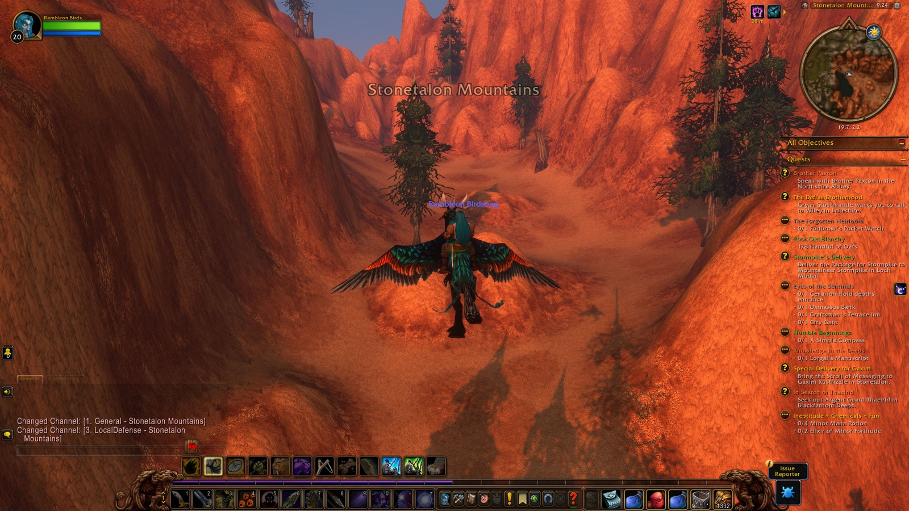
- Picked up
- Reclaiming the Charred Vale
- Turned in
- Special Delivery for Gaxim (Webwinder Path, level 20)
- First met in combat
- Sap Beast, Antlered Courser, Blackened Basilisk, Bloodfury Ambusher, Bloodfury Harpy, Rogue Flame Spirit, Bloodfury Windcaller, Charred Ancient, Singed Basilisk
- Deaths
- 7 (The Charred Vale, Stonetalon Mountains, Mirkfallon Lake)
- Company
- Cassidy, Arktalis, Falsila
32WestfallLevel 20
Westfall again, and this time the Defias Brotherhood proper — pillagers, messengers, looters, knuckledusters, pathstalkers, and highwaymen, far more organized trouble than the riverpaw taskmasters still prowling the edges of Moonbrook and Demont's Place. Rambleon worked his way down through the Dust Plains, the Dagger Hills, and Longshore, picking up Thunderbrew somewhere along that road. Cassidy and Cortonna walked with him through the thick of it. By the end of the stretch, a picture marks the moment he stood at the entrance to the Deadmines itself, Westfall's trouble finally leading somewhere specific.
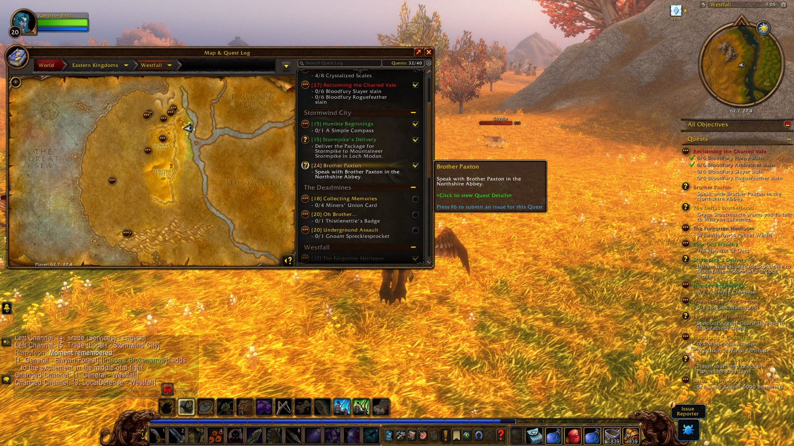
- Picked up
- Thunderbrew
- First met in combat
- Riverpaw Taskmaster, Defias Pillager, Defias Messenger, Defias Looter, Defias Knuckleduster, Defias Pathstalker, Defias Highwayman
- Company
- Cassidy, Cortonna
33The DeadminesLevel 20–21
Inside the Deadmines, Rambleon found the Defias Brotherhood's true depth — diggers, conjurers, miners, evokers, workers, and overseers, with Marisa du'Paige and Rhahk'Zor among the named trouble, and further in a goblin woodcarver, Sneed, and Sneed's own shredder waiting at the end of it. The Defias Watchman gave him no easier time. Two deaths marked the run, one in the Mast Room and one at Ironclad Cove, but he reached level twenty-one somewhere in that hideout before it was through, a picture holding the moment. Dire, Jstermy, and Emchetyre saw him through the Goblin Foundry and the rest of the instance, another picture marking a moment there as well — his first full dungeon crawl set down in the record, and a proud one to have finished.
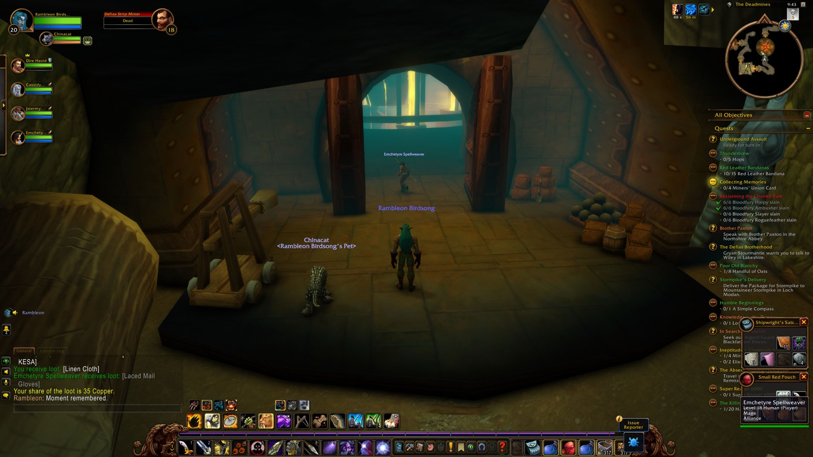
- Reached
- level 21 (The Deadmines)
- First met in combat
- Defias Digger, Defias Conjurer, Marisa du'Paige, Defias Miner, Defias Evoker, Defias Worker, Defias Overseer, Rhahk'Zor, Defias Watchman, Goblin Woodcarver, Sneed, Sneed's Shredder
- Deaths
- 2 (Mast Room, Ironclad Cove)
- Company
- Dire, Jstermy, Emchetyre
- Instances
- Deadmines
34WestfallLevel 21
Back out of the Deadmines and into Westfall, Rambleon crossed through the Dead Acre, where harvest reapers and a greater fleshripper made for grimmer fighting than the surrounding farmland usually offered. Sentinel Hill and Saldean's Farm felt quieter by comparison after that. Cassidy remained with him through this stretch, and a picture marks his passage onward into Duskwood, the dungeon finally behind him and new ground still ahead.
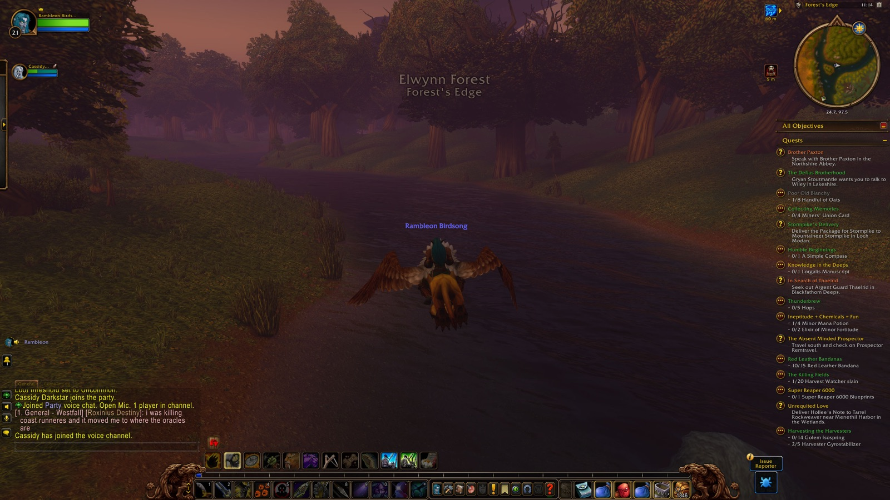
- First met in combat
- Harvest Reaper, Greater Fleshripper
- Company
- Cassidy
35Stormwind CityLevel 21
A short stop in Stormwind let Rambleon turn in Underground Assault in the Dwarven District, business left over from his first look at the city. He picked up word of the Gyrodrillmatic Excavationators before moving on, and came away from somewhere in this visit with a pair of Bravo's Armbands worth keeping, a small but welcome upgrade. A picture marks his return to the city at level twenty-one, the Valley of Heroes and the Canals as familiar now as any ground in Teldrassil had once been.
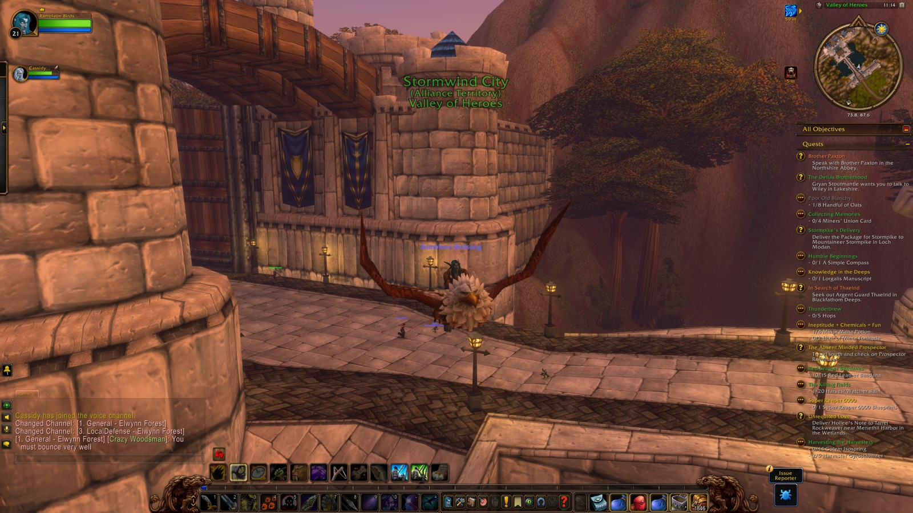
- Picked up
- Gyrodrillmatic Excavationators
- Turned in
- Underground Assault (Dwarven District, level 21)
- Loot worth keeping
- Bravo's Armbands (Uncommon)
36WestfallLevel 21
Westfall took up most of this night's work. At Saldean's Farm he finally closed out The Killing Fields, and at Sentinel Hill he turned in Red Leather Bandanas, a long-running thread from his first visit to this province settled at last. Riverpaw bandits and brutes, defias pillagers, pathstalkers, knuckledusters, highwaymen, and a renegade mage, along with the familiar goretusks and harvest watchers, filled the fighting across Stendel's Pond, Moonbrook, Demont's Place, the Dagger Hills, Longshore, the Dust Plains, and out to Alexston Farmstead and the Molsen Farm. He came away with pristine leather, a pair of harvester's pants, and a cloak of the People's Militia, worth keeping all three. He picked up Westfall Stew again, a note someone had found, and word to report to Gryan Stoutmantle, errands for the morning still. Raven walked this ground with him.
- Picked up
- Westfall Stew, ... and that note you found, Report to Gryan Stoutmantle
- Turned in
- The Killing Fields (Saldean's Farm, level 21), Red Leather Bandanas (Sentinel Hill, level 21)
- First met in combat
- Riverpaw Bandit, Riverpaw Brute, Defias Pillager, Defias Pathstalker, Defias Knuckleduster, Goretusk, Defias Highwayman, Defias Renegade Mage, Harvest Watcher
- Loot worth keeping
- Pristine Leather ×2 (Uncommon), Harvester's Pants (Uncommon), Cloak of the People's Militia (Uncommon)
- Company
- Raven
37Sentinel TowerLevel 21
At Sentinel Tower, Rambleon delivered his report to Gryan Stoutmantle as instructed, closing out that short errand almost as soon as it had been handed to him. He picked up word of the People's Militia in turn before moving on through Duskwood and Elwynn Forest. A picture marks this entry into the tower, a small and orderly stop in the middle of Westfall's much longer troubles.
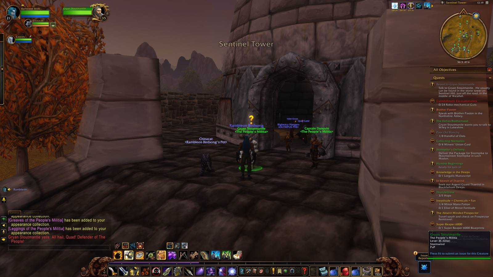
- Picked up
- The People's Militia
- Turned in
- Report to Gryan Stoutmantle (level 21)
38Stormwind CityLevel 21
One more pass through Stormwind, and at Cathedral Square Rambleon finally turned in Humble Beginnings, an errand picked up back when Westfall was still new to him. The Valley of Heroes, the Trade District, and the Canals carried him there and away again, quick and uneventful, the sort of short visit that exists mostly to close a loop left open from an earlier night of travel.
- Turned in
- Humble Beginnings (Cathedral Square, level 21)
39Elwynn ForestLevel 21
The record closes in Elwynn Forest, gentler country than most of what had come before. At the Library Wing in Northshire Valley, Rambleon turned in Brother Paxton, business carried from Stormwind. He walked through Goldshire, the Main Hall, the Hall of Arms, Fargodeep Mine, Forest's Edge, the Stonefield Farm, and Mirror Lake, picking up Ink Supplies and a Gold Dust Exchange along the way, errands to carry into whatever came next. Twelve nights had taken him from Teldrassil's lake to this quieter valley, from level eight to level twenty-one, through forest and coast and city and one dungeon's depths. The journal closes here, at Mirror Lake, with the Gold Dust Exchange and the Ink Supplies still open on the ledger — a hunter's road paused, not finished, the next stretch of it still to be walked.
- Picked up
- Ink Supplies, Gold Dust Exchange
- Turned in
- Brother Paxton (Library Wing, level 21)
40Stormwind CityLevel 21
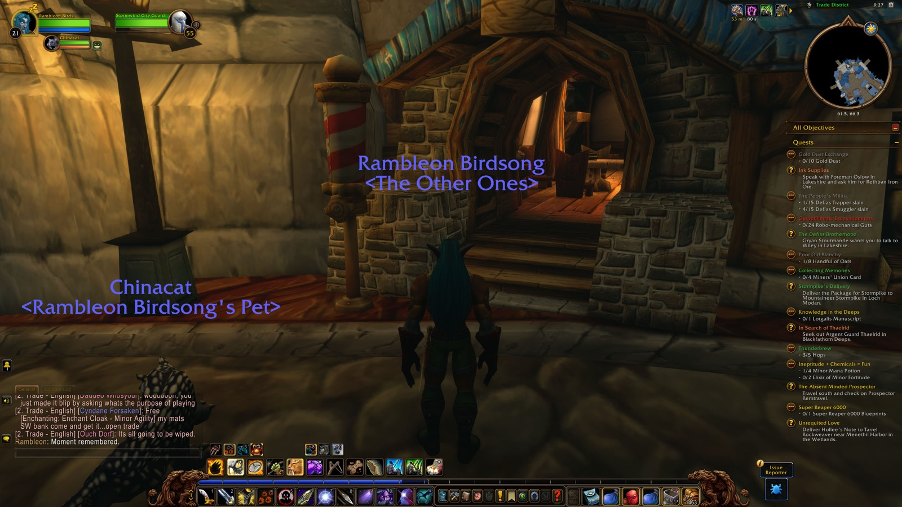
- Company
- Cassidy
41AshenvaleLevel 21–22
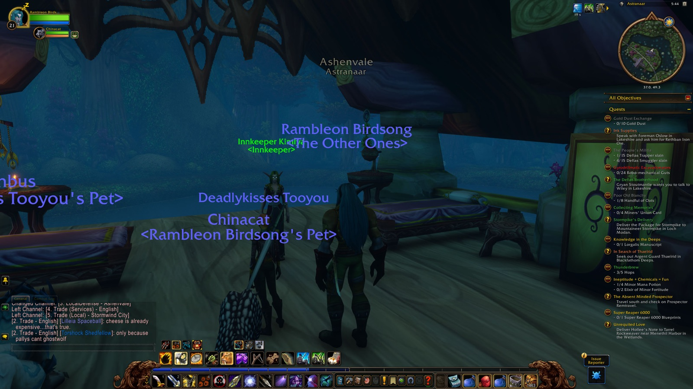
- Picked up
- Bathran's Hair, Orendil's Cure, Supplies to Auberdine, Elune's Tear, The Ruins of Stardust, Fallen Sky Lake
- Turned in
- Bathran's Hair (Maestra's Post, level 21), Orendil's Cure (Astranaar, level 21), Elune's Tear (Astranaar, level 21), The Ruins of Stardust (Astranaar, level 22), Culling the Threat (Astranaar, level 22)
- Reached
- level 22 (The Ruins of Stardust)
- First met in combat
- Ghostpaw Runner, Forsaken Seeker, Forsaken Thug, Forsaken Herbalist, Dark Strand Assassin, Forsaken Scout, Aligar the Tormentor, Ashenvale Bear, Wildthorn Stalker, Shadethicket Moss Eater, Shadethicket Wood Shaper, Shadethicket Raincaller
- Loot worth keeping
- Formula: Enchant 2H Weapon - Lesser Spirit (Uncommon), Prospector's Mitts (Uncommon), Wrangler's Belt of the Owl (Uncommon), Militant Shortsword of Agility (Uncommon), Demon Band (Uncommon)
- Deaths
- 4 (Bathran's Haunt, Ashenvale, The Ruins of Stardust)
- Company
- Cassidy, Gabe, Night, Telas, Ryaj
42Stonetalon MountainsLevel 22
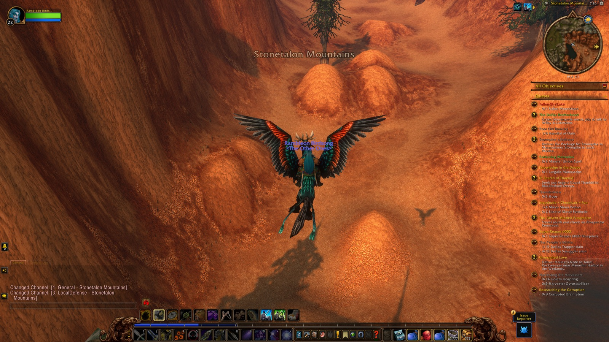
- First met in combat
- Twilight Runner, Blackened Basilisk